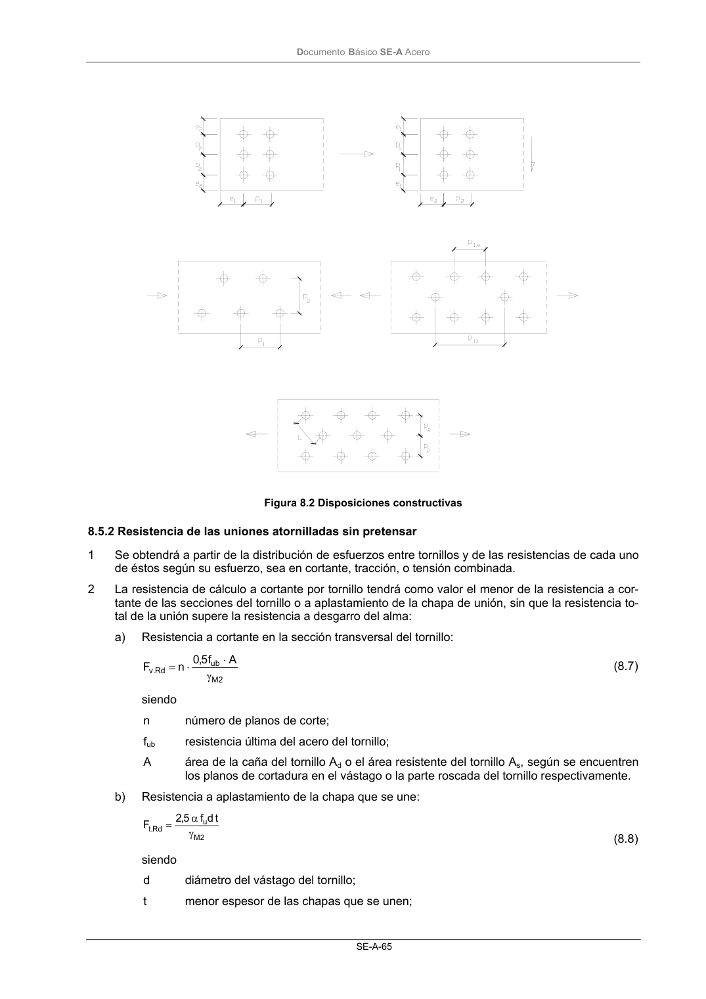

DB-SE-A Acero · edición 2007-10-23 · capa oficial
Documento DB-SE-A-oficial · SHA-256 del PDF 9ed9ea694aabfbda3bfbbef40dfe9223fde05d13c35bc2ba9751e5a96a22a64f
Página física 67 de 168.
Copia fiel del PDF fuente · Fuente oficial
Ficha de la disposición en la fuente oficial
Formato: Texto de la página (Markdown)
Documento Básico SE-A Acero SE-A-65 Figura 8.2 Disposiciones constructivas 8.5.2 Resistencia de las uniones atornilladas sin pretensar 1 Se obtendrá a partir de la distribución de esfuerzos entre tornillos y de las resistencias de cada uno de éstos según su esfuerzo, sea en cortante, tracción, o tensión combinada. 2 La resistencia de cálculo a cortante por tornillo tendrá como valor el menor de la resistencia a cor- tante de las secciones del tornillo o a aplastamiento de la chapa de unión, sin que la resistencia to- tal de la unión supere la resistencia a desgarro del alma: a) Resistencia a cortante en la sección transversal del tornillo: 2 M ub Rd . v A f 5,0 n F γ ⋅ ⋅ = (8.7) siendo n número de planos de corte; fub resistencia última del acero del tornillo; A área de la caña del tornillo Ad o el área resistente del tornillo As, según se encuentren los planos de cortadura en el vástago o la parte roscada del tornillo respectivamente. b) Resistencia a aplastamiento de la chapa que se une: 2 M u Rd .t t d f 5,2 F γ α = (8.8) siendo d diámetro del vástago del tornillo; t menor espesor de las chapas que se unen;
